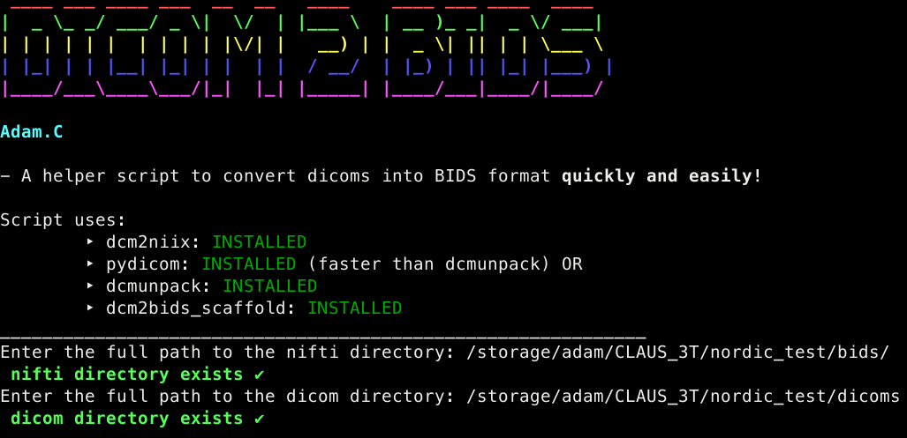
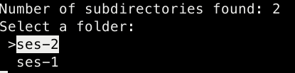
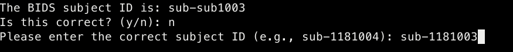
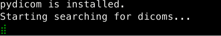
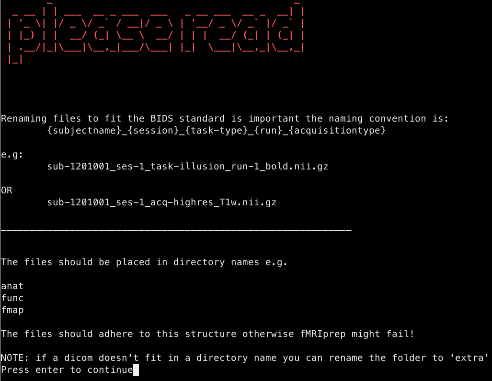
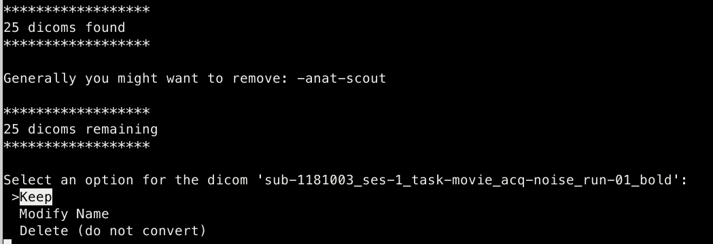
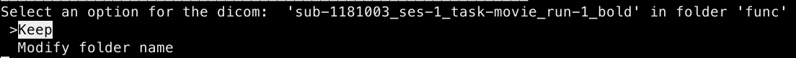

Dicom to Bids conversion
Documentation
Documentation related to the conversion of dicoms to BIDS format
See also BIDS specificiation
- Other programs that can be used to convert dicoms to BIDS
Going from DICOMS to BIDS datasets (with folder structure):
https://github.com/nipy/heudiconv https://github.com/cbedetti/Dcm2Bids https://github.com/jmtyszka/bidskit https://github.com/dangom/dac2bids
Going from DICOMS to NIFTI + BIDS JSON sidecar:
https://github.com/rordenlab/dcm2niix
matlab dicom to nifti tool converter
Dicoms
Dicoms are the raw files that are collected after an MRI session and are aren’t too useful to us because analyses use the
.niftiformatThe script aims to get the dicoms into BIDS format ready for fMRIprep
The script is intended to be a useful for those first starting an fMRI analysis
Script
I created a script found here that carries out the transformation from dicom to BIDS format
This is useful because often times we want to convert to BIDS and there are lots of different ways to do this (some more complicated than others)
Here I wanted the script to be as easy as possible for a number of reasons but primarily so that anyone can run it (even without using
.jsonfiles)
How to use the script
The script will guide you through the process of converting from dicoms to BIDS
What’s important to know is that the script is not always accurate and will require some input to correct some things
1. Choose the name of the dicom folder in which to convert

2. Optional: If there are subdirectories in the dicom folder (e.g. ses-1 or ses-2) pick one

3. Get the name of BIDS subject

- What is often the case for us is that the dicoms folder for each participant is named differently to how we want out subject/ BIDS name to be.
4. DICOM search. This will either use pydicom or dcmunpack
For some reason pydicom runs a lot faster!!! dcmunpack can take hours but using pydicom can be finished in a few minutes
- Here the script roughly unpacks all the dicoms ready for the step which renames files and folders and puts the niftis in these new folders

5. Information about the renaming and BIDS conventions
pydicom and dcmunpack don’t get everything right 100% of the time and the folders/ names of the niftis might be incorrect. This is important as you might want to rename your dicom files into a new name that fits the BIDS format
The option to delete dicoms is also important, the anat-scout is not crucial for an analysis so theres no need to try to convert it to BIDS

6. Keep/ modify/ delete
Choose to keep the dicom and the name of the dicom, modify it or delete it (ie don’t convert)
Any action here will apply to the
.nii.gzand the.json

- If you want to modify the name of the BIDS file then choose modify and rename according to the BIDS naming convention

- If you want to keep or modify the folder the BIDS file belong to then select either keep or modify

- Here I want to keep the folder
funcbecause it is correct

- Here I want to choose the folder
extra(this is not a BIDS folder but I want to convert the dicom to a nifti, I’d remove this before fMRIprep)

- Often times the anat folder name is wrong. Here the name should just be
anat
7. Adding IntendedFor field to fmap json
The conversion does not always add the IntenderFor field to the
.jsonin the fmap folderFor [distortion correction] to take place in fMRIprep it is necessary to add the IntendedFor field to the .json
The script uses
jqto provide the insertion into the fmap .json fileThe format that is added is not BIDS URI compliant but the script will output a text file that can be used to change the intendedfor field with BIDS uri compliant paths.